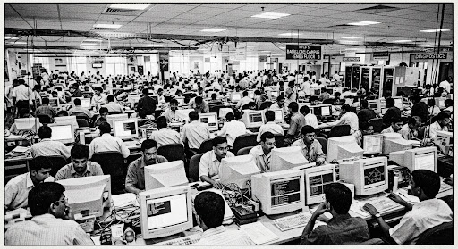

FROM KEYSTROKE FACTORIES TO MACHINE PILOTS: HOW AI REWRITES INDIA’S IT RUNWAY (2026 VS 2030)
In 2026, coders treated AI as a faster auto-complete assistant. By 2030, foreign clients refuse to pay for rooms of forty typists when three engineers guiding autonomous agents build the whole project. Here is how India's $250-billion technology corridor is changing.
FIG. 1 — The Shifting Floor: Software engineers and tech leads along Chennai's Rajiv Gandhi Salai (OMR). India's IT industry employs 5.42 million direct engineers; today, routine code typing is yielding to system verification and safety design.
For three decades, the operational physics of the Indian software export economy were governed by a very simple equation: the cost arbitrage of routine human typing. Entire metropolitan corridors—from the dusty fringe of Whitefield to the elevated expressways of Gachibowli—were erected to service this massive need for syntactic labor. In 2026, that foundation experienced its first structural shaking.
Today in 2026, tools like Copilot, Cursor, and Claude are inside every office cubicle. An average programmer can finish a day's boilerplate code before lunch. But global clients are asking a brutal question: "If software writes itself, why should we pay you $45 an hour for human fingers to type it?"
By 2030, the old body-shop model is officially dead. Enterprise buyers across North America and Europe no longer commission vast pyramid squads composed of four hundred junior developers supervised by a dozen managers. The mandate demands lean squads of 5 to 8 architects overseeing autonomous AI agent swarms.
The question confronting Hyderabad, Bengaluru, and Chennai is not whether code will continue to exist, but whether the Indian IT industry can transition from selling cheap typing hours to selling guaranteed, secure, and audited business outcomes.
2026 VS 2030 CORRIDOR METRICS
[REPORTED & PROJECTED RUNTIME DATA]
Source: Consolidated field study of Tier-1 global delivery centers across Tamil Nadu, Karnataka & Telangana.
In 2026, AI helps the coder type. In 2030, AI types the code, and the human’s only job is making sure the machine didn’t make an expensive mistake.— Memorandum of Technical Labour, 2026
REGULATORY NOTICE • IMPRIMATUR NO. 74
Verified archival report released across all technical engineering institutes.
WHAT HAPPENED TO THE ROUTINE TYPISTS?
The collapse of repetitive scaffolding and the rise of the system auditor.
The traditional software job of manually writing basic web forms, simple database queries, and unit tests is melting away. What took a junior programmer five days in 2022 takes thirty seconds in 2026. The high salaries of 2030 belong to engineers who know how to connect systems, audit security, and catch model mistakes.
WHY FRESHERS FEEL THE PINCH FIRST
Mass campus hiring gives way to verified portfolios and real-world projects.
For three decades, colleges ran a conveyor belt directly into enterprise bench pools. When an AI tool does the work once delegated to four junior analysts, the entry door closes sharply. Freshers who rely only on memorized textbook code struggle, while those who build live apps thrive.
WHY FOREIGN CLIENTS REVOLTED
Western companies refuse to pay per-hour fees for automated boilerplate.
Procurement teams in New York, London, and Frankfurt have audited their software bills. They will no longer approve contracts that bill $40/hour for junior engineers to copy-paste code. Contracts in 2030 demand fixed pricing tied to uptime, speed, and zero software bugs.
WHO WINS THE 2030 RACE?
Domain masters and clear communicators claim the top compensation brackets.
The engineers who command top salaries in 2030 are not typing machines. They are bridge builders: individuals who understand how a hospital operates, how a supply chain runs, or how a bank avoids fraud, and who can instruct AI agent fleets to build the exact software required.
EMPTY PGs, QUIET AUTOS & COLD CHAI: HOW AI AND REMOTE WORK SHAKE SOUTH INDIA'S TECH CITIES
“An IT engineer is not merely a software builder—their monthly paycheck feeds the auto driver, the PG landlord, the lunch mess, and the corner tea stall. When software teams shrink and work from home, the whole city feels the pinch.”
The Peninsular Consumption Cascade
Tracing how a single software paycheck spreads through South India's urban local economy
IT Workforce
5.42M Direct Engineers disbursing monthly payrolls across hubs.
PGs & Rental Houses
Bachelor mansions, shared flats, and 10-month rental cash advances.
Messes & Tea Stalls
Darshinis, Andhra meals, and over 35,000 independent street chai kiosks.
Autos, Cabs & Buses
Auto stands, app cabs, and private AC corporate bus lines.
Quick-Commerce & Food
Swiggy, Zomato, Zepto riders, and dark stores in tech suburbs.
Salons, Kiranas & Gyms
Hair salons, neighborhood grocery shops, tailors, and fitness centers.
Suburban Real Estate
Apartment towers, gated communities, and land promoter investments.
Municipal Exchequer
Property stamp duties, commercial power tariffs, and road cess revenue.
The "To-Let" Signs of Navalur & Bellandur
When hiring slows and developers work from their hometowns, multi-story bachelor hostels face sudden, painful vacancies.
AVERAGE TENANT DEPOSIT: Historically pegged at 10 months advance across Bengaluru; shrinking to 2–3 months in Navalur & Gachibowli to attract tenants.
For fifteen years, property owners along Chennai's OMR and Bengaluru's Outer Ring Road took massive bank loans to build 5-story PG hostels. They charged ₹15,000 per sharing bed and demanded huge cash advances.
With AI automating junior roles and tech companies offering permanent hybrid or remote options, thousands of engineers have packed their bags. They prefer living with family in Trichy, Madurai, or Warangal, saving on rent while working online.
Today, "To-Let" placards hang on iron gates month after month. Landlords who expected guaranteed high rental yields are forced to slash rates by 30% to keep their doors open.
Cold Tea Stalls & The Empty Lunch Mess
The mid-day rush that sustained thousands of small food joints splinters into quiet streets and home cooking.
DAILY CORRIDOR CONSUMPTION: Over 35,000 tea stalls across the three cities report a 40% reduction in daily evening cup counts as campus footfalls drop.
At 4:00 PM, outside any major tech park, the roadside tea stall was once an ocean of young professionals chatting over ginger tea, cigarettes, and hot onion samosas.
Behind that tea vendor stood a whole supply chain: milk delivery vans, lemon suppliers, bakery biscuit distributors, and local vegetable markets. When employees work from home three days a week, that daily cash circulation evaporates.
Small Andhra lunch messes and Darshini tiffin centers in Madhapur and Marathahalli that once prepared hundreds of daily meals are cooking half their usual quantities to avoid throwing away unsold food.
Unpaid EMIs on Auto Rickshaws and Cabs
Drivers who took private loans to buy vehicles to ferry IT commuters face soaring fuel costs and dwindling passenger queues.
FLEET CONSOLIDATION: Major IT delivery centers have trimmed dedicated AC bus lines by 55%, pushing contracted transport fleets into distress sales.
Thousands of young men from rural districts moved to the city, obtained commercial licenses, and bought cars on monthly loans of ₹14,000 to drive for tech corridors and cab apps.
With software teams automated and employees commuting fewer days, drivers wait hours at metro stations and tech park gates for a single booking. After paying petrol and app commissions, many take home less than ₹400 a day.
Auto drivers who charged premium fares between Sholinganallur and Tidel Park are now negotiating lower rates, proving that when the tech engine slows down, the humblest driver pays the price.
BENGALURU: THE HYPER-CONCENTRATED EPICENTER
Bengaluru remains India’s startup capital, but its heavy reliance on IT makes it vulnerable. The Outer Ring Road faces severe rental corrections. However, top venture capital and deep-tech AI startups keep its core vibrant even as routine coding jobs disappear.
HYDERABAD: THE GLOSSY TOWERS MUST ADAPT
With massive, sprawling office parks built along Gachibowli and the Outer Ring Road, Hyderabad faces huge physical floor space overhang. City planners are rapidly converting vacant corporate floors into biotech labs, healthcare centers, and educational spaces.
CHENNAI: THE DEFENSIVE INDUSTRIAL FORTRESS
Chennai holds the strongest economic shield in South India. While its OMR tech corridor cools down, its massive automobile factories in Sriperumbudur, medical tourism hospitals, and busy seaports keep the broader city economy resilient and steady.
SPECIAL CYBER INVESTIGATION
WHEN THE MACHINE TURNS THIEF: HOW AI CRACKS CITIZEN VAULTS AND BILLIONAIRE BOARDROOMS
Hacking once required a team of human computer geniuses working for weeks. Today, automated AI algorithms test millions of digital locks every second. Why your grandmother’s pension and the CEO’s private memos are leaking onto the same dark web.

FIG. 3 — The Breached Network: Automated neural network probes intercepting encrypted database streams. In 2026, cyber breaches are no longer manual—autonomous hacking swarms operate continuously without human fatigue.
A generation ago, computer crime was a boutique craft. A skilled hacker targeted a specific bank, broke through a firewall, and walked away with a digital prize. In 2026, artificial intelligence has industrialized digital theft into an automated, mass-production assembly line.
Autonomous software agents now scan thousands of corporate databases, cloud storage servers, and municipal registries every minute of the night. The moment a software update leaves a tiny digital window cracked open, an AI bot slips in, copies every citizen's record, and leaves without setting off a single human alarm.
THE TWO FACES OF DATA EXPOSURE
[HOW DIFFERENT CLASSES SUFFER LEAKS]
1. Ordinary Citizens & Middle-Class Families
Aadhaar numbers, phone contacts, personal photos, and bank OTPs leaked on Telegram. Scammers use AI voice clones of their children to extort emergency cash.
2. High-Profile VIPs & Industrial Tycoons
Boardroom audio leaked before stock earnings, private diagnostic hospital health records stolen, and multi-million-dollar AI deepfake wire transfers.
3. National Infrastructure & Municipal Data
Power grid switches, hospital diagnostic queues, and municipal property records vulnerable to automated state-sponsored cyber warfare.
“In the old days, you locked your front door. In the AI era, your front door is made of glass, and the lock checks itself into the cloud.”— NATIONAL CYBER SECURITY DEFENSE ADVISORY
NO MORE SPELLING MISTAKES
AI crafts flawless scam messages in native regional languages.
Previously, people could spot a fraud message because of broken English, weird symbols, or obvious grammar errors. Today, AI models generate polite, official-sounding SMS and WhatsApp notices in perfect Tamil, Hindi, or Telugu, convincing even cautious retired teachers to click deceptive bank links.
THE STOLEN CHILD VOICE
Five seconds of video audio is enough to replicate any human voice.
Scammers take a 5-second voice clip from a public Instagram video and feed it into an AI voice generator. They call parents, sounding exactly like their crying son or daughter claiming to be arrested by police or trapped in a hospital, demanding an immediate UPI transfer of ₹50,000.
THE BOARDROOM INFILTRATORS
When executives fall victim to deepfake video conference calls.
In major financial centers, finance managers have joined Zoom video calls where every participant—including the Chief Financial Officer—was an AI deepfake avatar. The manager transferred $25 million overseas before realizing not a single real human was in the virtual conference room.
FOUR GOLDEN DEFENSE RULES
How common families can protect their data in the age of AI.
First: Establish a secret family "safeword" that a real family member must speak during emergencies. Second: Never trust incoming bank calls; hang up and dial the official bank branch. Third: Lock your Aadhaar biometrics on the official portal. Fourth: Never post voice clips on public social media.
OCCUPATIONAL CENSUS 2026–2030
SCREENS CAN BLUR, BUT WRENCHES DON’T LIE: WHY AI CRUSHES DESK TYPISTS BUT CAN’T TOUCH THE LOCAL MECHANIC
An algorithm can synthesize twenty thousand lines of code in five seconds. But it cannot crawl beneath a car to loosen a rusted bolt, climb a ladder to fix a burnt transformer, or brew a steaming glass of ginger tea on a rainy morning.
IT ROLES IN SHARP DECLINE
[ 65% – 85% AUTOMATED ]
REPETITIVE SYNTAX • LOW JUDGMENT
Tasks bound by predictable patterns and copy-paste templates that AI models execute without fatigue.
01. Manual QA & Regression Testers
Automated testing agents click through thousands of test flows in seconds.
02. Routine Boilerplate & CRUD Coders
Simple website building, basic forms, and copy-paste API writing are now 100% automated.
03. Level-1 Helpdesk & Chat Support
Intelligent voice bots answer customer queries and reset passwords instantly.
04. Basic Data Entry & Doc Formatters
Extracting text from invoices and generating simple tables requires zero humans.
IT ROLES SOARING IN VALUE
[ +120% SALARY PREMIUM ]
SYSTEM ARCHITECTURE • AUDIT & SAFETY
High-judgment engineering where an error causes massive financial or regulatory disaster.
01. AI Reliability & Safety Auditors
Specialists who test models for hallucinations, bias, and legal compliance before launch.
02. Cloud & Hardware Infrastructure
Data centers, fiber cables, cooling towers, and GPU servers need real human engineering.
03. Domain Architects & Translators
Engineers who understand complex hospital, banking, or logistics logic and direct AI agents.
04. Cyber Incident Commanders
Rapid response humans who take charge when automated systems suffer zero-day attacks.
THE UNTOUCHABLE CRAFT TRADES
[ 100% IMMUNE TO AI ]
TACTILE MASTERY • REAL-WORLD WORK
Jobs requiring biological hands, physical balance, real-world tools, and sensory intuition.
01. Two-Wheeler & Car Mechanics
Diagnosing an engine knock, replacing brake shoes, or tuning an EV scooter needs real hands.
02. Electricians & Plumbers
Reaching inside a damp ceiling to fix a burning junction box will never be done by a chatbot.
03. Tea Kadai & Breakfast Masters
The morning ritual of steaming filter coffee, hot vadai, and street banter is sacred and irreplaceable.
04. Carpenters, Welders & Masons
Custom wood carving, iron gate fabrication, and physical brick construction remain strictly human.
THE REVENGE OF THE REAL WORLD: WHY TRADESMEN WIN
HISTORIC CAREER RE-EVALUATION
For thirty years, middle-class Indian parents operated under an ironclad cultural rule: get your child an engineering degree, buy them a laptop, and secure a desk job inside an air-conditioned glass tower. Physical labor—such as fixing pipes, repairing motorcycle clutches, or running a workshop—was viewed as inferior.
The rise of artificial intelligence has turned that snobbery on its head. Software sitting on a computer screen is infinitely duplicable at zero marginal cost. An AI model can produce forty web applications before you finish drinking your coffee. But an AI model cannot tighten a single leaking screw on a bathroom tap.
Today in cities like Chennai and Bangalore, a reliable electrician, an experienced car mechanic, or a master carpenter earns more cash per day than an entry-level software tester stuck in a cubicle. They own their tools, they work on their own schedule, and they have zero fear that a Silicon Valley software update will make their hands obsolete tomorrow.
The lesson of 2030 is clear: the future belongs to two groups—those who command the master architecture of machine minds, and those whose skilled hands shape the physical, tangible world we live in.
SPECIAL BROADSHEET TREATISE ON THE SUB-CONTINENT'S COGNITIVE CAPITAL
THE FIVE-YEAR WAVE: MAPPING AI ADOPTION FROM 2026 PILOTS TO 2030 REALITY
“We moved past marketing hype to measure actual enterprise integration: year-by-year projections of how artificial intelligence moves from an experimental novelty into the foundational concrete of Indian business.”
DATA JOURNALISM: THE 2026–2030 ADOPTION DISPATCHES
COMPILED VIA NATIONAL INDUSTRY REGISTRIES & CHRONICLE COMPUTATIONAL DESK
GRAPH I: AI ADOPTION TRAJECTORY (2026 → 2030)
Share of routine code written autonomously (%)
Fig. 1 — Annual progression: 2026 (28%) → 2027 (42%) → 2028 (58%) → 2029 (71%) → 2030 (84%).
GRAPH II: AI AUTOMATION BY TASK DOMAIN
Degree of task substitutability
Fig. 2 — Digital information tasks face overwhelming automation, while physical craft trades stay protected.
GRAPH III: CAMPUS FRESHER INTAKE SHIFT
Annual recruitment thousands per batch
Fig. 3 — Pure headcount bulk recruiting drops sharply, shifting to highly tested specialists.
YEAR-BY-YEAR AI ADOPTION ROADMAP (2026 → 2030)
PROJECTED OPERATIONAL MILESTONES
Developers in Indian IT parks use AI as a faster auto-complete. Code is written 35% faster, but companies still bill clients using traditional headcounts. Freshers face slower hiring, but existing staff keep their desks while management explores automated pilot programs.
Autonomous AI agents move beyond suggestions to build, test, and deploy entire small software modules overnight. Manual QA testing teams shrink rapidly as automated test suites run continuous self-healing code checks without human intervention.
Global banks, airlines, and insurance providers use AI models to modernize 25-year-old COBOL and Java systems in three months rather than five-year consulting contracts. The traditional IT "maintenance contract" revenue stream contracts by 40%.
Writing syntax becomes obsolete. Business analysts, doctors, and store managers build internal applications simply by speaking in plain conversational Tamil, Hindi, or English. Software creation becomes as universal as sending a text message.
A 5-person engineering firm routinely launches platforms that once required 100 people. Pure typists find zero market demand. High wages concentrate exclusively among system-level architects, cybersecurity commanders, and physical real-world trade craftsmen.
SOCIOLOGICAL INVESTIGATION
THE GREAT KNOWLEDGE DIVIDE: HOW AI SHAKES THE UNEDUCATED, PUNISHES THE RIGID, AND CROWNS THE CURIOUS
Will a street vendor who cannot read be crushed by AI, or will voice technology give him unexpected superpowers? What happens to the educated office worker who refuses to touch modern tools? A look at who wins, who stumbles, and who gets left behind.
FIG. 6 — The Dual Reality: A vegetable vendor using voice-activated regional AI on a 5G handset in Koyambedu market, while white-collar office desks face automated restructuring.
When people discuss artificial intelligence, they usually assume the rich and educated will win, while the uneducated will lose. The reality of 2026 is far more surprising and unpredictable.
The technological divide is no longer about who went to college—it is about who learns to interact with intelligent machines. In many ways, voice-enabled AI is liberating people who cannot read or write, while ruthlessly replacing comfortable desk workers who refuse to adapt their habits.
WHO GAINS VS WHO GETS CRUSHED
[THE NEW THREE-CLASS SOCIETY]
1. The Uneducated / Blue-Collar
Loses basic clerical stepping stones, but gains massive empowerment through spoken voice-AI assistants in regional mother tongues.
2. The Educated "AI-Illiterate"
The most vulnerable segment: white-collar desk workers doing routine spreadsheets, paperwork, and writing who refuse to adapt.
3. The AI-Empowered Super-User
Huge winners: A single person using AI tools to run entire businesses, design apps, write contracts, and achieve 10x earning leverage.
“AI will not replace humans. But humans who master AI will completely replace the humans who refuse to learn it.”— GUILD SOCIOLOGICAL OBSERVATORY
A SURPRISING VOICE PARADOX
On one hand, basic clerical stepping stones—like typing pool clerk or manual data entry—are gone, shutting an old entry route for poor families. But on the other hand, voice-enabled AI in Tamil, Hindi, and Telugu allows an illiterate farmer or fruit vendor to speak directly into a phone and get instant wholesale market prices, fertilizer advice, and government welfare funds without having to pay a corrupt middleman.
THE MOST DANGEROUS POSITION
This is the most endangered class in modern India: the university graduate who took a white-collar desk job in banking, accounting, or corporate paperwork and proudly says, "I don't use AI." They do not lose their job to a robot—they lose it to a 23-year-old junior colleague who uses AI to finish three days of invoice reconciliation before lunchtime.
THE 10X POWER MULTIPLIER
Whether a 20-year-old student or a 55-year-old small businessman, whoever learns to orchestrate AI prompts, check errors, and connect tools gains unfair commercial leverage. A single individual can write software, design a brand logo, draft customer legal contracts, and market a product worldwide from their bedroom without hiring a large agency.
THE TWO-SIDED BALANCE SHEET
THE BLESSING AND THE BURDEN: AN HONEST LEDGER OF WHAT AI GIVES US—AND WHAT IT TAKES AWAY
Cutting through corporate marketing hype and doomsday horror movies. A clear, side-by-side examination of artificial intelligence’s genuine gifts against its most dangerous consequences for human society.

FIG. 7 — The Industrial Crossroads: Systems engineers evaluating automated machine outputs in an enterprise delivery center. Every breakthrough in productivity brings equal questions of employment, truth, and human purpose.
FIVE GENUINE BLESSINGS OF AI
[UNQUESTIONED ADVANTAGES]
01. Medical Miracles & Early Disease Detection
AI analyzes thousands of CT scans and retinal photos in seconds, detecting early signs of cancer, blindness, or heart disease years before symptoms show. In drug discovery, algorithms design life-saving antibiotic molecules in weeks rather than fifteen years.
02. A Patient Tutor for Every Rural Child
Every student in an underprivileged village can now have a personal, never-tiring teacher in their pocket that explains algebra, physics, or history in their native mother tongue at their own learning pace without judgment.
03. The Death of Soul-Crushing Drudgery
Eliminating millions of hours of mindless human suffering spent filing boring government forms, sorting repetitive tax invoices, and organizing medical claims, freeing human minds for creative and empathetic work.
04. Solving Grand Climate & Food Crises
Optimizing city electric grids to reduce carbon emissions, predicting sudden flood surges hours in advance, and helping farmers use 30% less water and pesticide while increasing wheat and paddy yields.
05. Supercharging the Solo Creator
A small inventor, teacher, or filmmaker with zero capital can produce animated movies, code a smartphone app, or publish an illustrated book that previously required a $50-million corporate studio.
FIVE SEVERE BURDENS OF AI
[UNINTENDED DISASTERS]
01. Sudden Job Destruction & Middle-Class Anxiety
Career pathways that sustained families for generations—junior programming, accounting, basic legal research, copywriting—are evaporating before school and college systems can retrain millions of anxious graduates.
02. The Death of Digital Truth & Deepfakes
Photorealistic deepfake videos, fake celebrity speeches, and cloned voice scams are destroying social trust. People can no longer believe video evidence or phone calls, poisoning elections and family safety.
03. Human Cognitive Atrophy & Lazy Thinking
When algorithms write our letters, summarize our books, and calculate our arguments, the human brain’s critical thinking and memory muscles wither from disuse, creating a generation dependent on machine prompts.
04. Astronomical Thirst for Electricity & Water
Training and running massive AI clusters consumes electricity equivalent to whole cities, and millions of liters of clean water are evaporated daily just to cool computer chips while global warming accelerates.
05. Encoded Prejudice & Algorithmic Injustice
When AI models are trained on historical human data, they repeat historical discrimination—quietly rejecting bank loans, college admissions, and job applications against minority and underprivileged communities.
“AI is neither a savior to worship nor a monster to destroy. It is a giant magnifying mirror held up to the human soul. Whatever wisdom, greed, love, or malice we feed into it, the machine reflects back at ten times the speed.”
THE MORAL OF THE MACHINE: WHAT REMAINS SACRED WHEN CODE CAN THINK?
As algorithms master logic, calculation, and syntax, they hand humanity a profound mirror. The ultimate lesson of the AI revolution is not technical—it is deeply, stubbornly, and beautifully human.
A computer algorithm can recite every medical textbook written in human history, cite every pharmaceutical trial, and cross-reference ten million symptoms in a millisecond. But it cannot sit by a hospital bed at 3:00 AM, look into a daughter's crying eyes, and hold her hand with genuine empathy. Never confuse the rapid retrieval of data with the presence of a human conscience. Knowledge is knowing what a machine said; wisdom is knowing whether a human should obey it.
For fifty years, our school examination halls rewarded students who could sit in complete silence, memorize textbook definitions, and regurgitate formulas on command. We were training children to behave like crude calculators. Now that real calculators have arrived in the form of neural networks, that rote training is obsolete. We must finally teach what makes humans irreplaceable: artistic imagination, kindness, original storytelling, moral bravery, and practical teamwork.
If the magnificent power of artificial intelligence only succeeds in enriching six technology conglomerates in Silicon Valley while leaving millions of hardworking families anxious, unemployed, and displaced, then it is not progress—it is exploitation. The true greatness of a civilization is measured not by how fast its algorithms can generate quarterly profits, but by how well it protects the dignity and security of its humblest citizen.
The greatest threat of artificial intelligence is not a Hollywood robot with glowing red eyes. The real danger is much quieter: it is humans willingly surrendering our independent thought, our moral judgment, and our personal relationships to an algorithm designed solely to keep our eyes glued to an advertising feed. If we stop thinking critically, we become the machines.
The car mechanic tuning an engine in the afternoon sun, the nurse comforting an elderly patient, the schoolteacher inspiring a confused boy, the carpenter carving teakwood, and the street vendor boiling morning tea are not backward relics of the past. They are the living, breathing heart of human society. No algorithm can take the place of honest human work done with pride, patience, and compassion.
AUTHENTICATED ARCHIVAL SPECIMEN • IMPRIMATUR NO. 4482-B
THE CHRONICLE BENEDICTION TO THE COMING AGE
“To the engineers, the students, the workers, and the citizens of our cities: Keep your tools sharp, your minds independent, and your humanity unbroken. The machine may calculate the path, but only you can choose where to walk.”
TYPESET & SEALED AT THE BROADSHEET DESK • COMPLETED 2026 EDITION